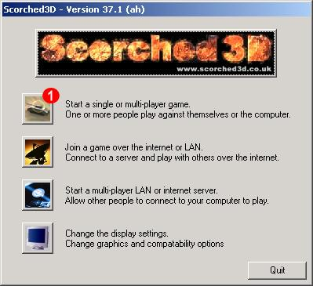
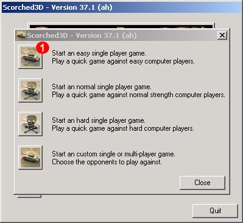
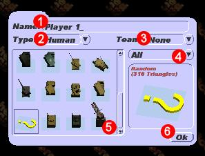

For Microsoft windows users start Scorched3D by choosing the Scorched3D folder from the start menu and then clicking on the Scorched3D icon. For Unix users start Scorched3D by starting a shell and typing scorched3d at the command promt.

This launcher allows you to start any of the main Scorched3D game types.
Game types include single player, multi-player and network games.
This launcher also allows you to change the user and display settings.
For now we want to start a single player game so
click on the single player icon (Shown as  on the image above).
on the image above).

This dialog allows you to choose between the different single player game types that Scorched3D supports.
The easy, medium and hard games are all single player games against one or more computer opponents.
The custom game allows you to choose how many human and computer players will play in the game as well as other game options.
For now we want to start an easy game so click on the easy single player game icon
(Shown as on the image above).

The player dialog has many options, see here for a more detailed look at the
player options dialog.
For the moment we are just going to ignore all these options and use the defaults.
Click on the ok button (Shown as  on the image above).
on the image above).

Once this is complete the island is drawn and the rules dialog is shown.
The rules dialog displays the rules for the current game, allowing the user to view the rules before
making their move. Remove the rules dialog by clicking on the ok button
(Shown as on the image above).

The default view shows four displays:-
The wind indicator displays the direction and strength of the current wind.
There is no wind in an easy single player game.
 The plan indicator displays the location of all of the tanks on a top down view.
The current tank to move will be marked by a flashing dot.
The plan indicator displays the location of all of the tanks on a top down view.
The current tank to move will be marked by a flashing dot.
 The weapon indicator displays the type, angle and strength of the currently selected weapon.
Everyone gets free baby missiles, so this is the currently selected weapon.
The weapon indicator displays the type, angle and strength of the currently selected weapon.
Everyone gets free baby missiles, so this is the currently selected weapon.
 The player indicator displays the player health, name and other player attributes.
Once your health reaches zero your tank will explode.
The player indicator displays the player health, name and other player attributes.
Once your health reaches zero your tank will explode.
See here for a more detailed look at the on screen displays.
The default Scorched3D view is not very good for aiming (although it is nice to see the whole island).
Press the number 2 key on the keyboard, this will switch to a more usefull aiming camera.

The number keys choose from a set of pre-define camera angles. You can always get back to the main island view by pressing the number 0 key on the keyboard. You can move closer to the tank by pressing the number 3 and 4 keys on the keyboard. The number 2 key will return you to this aiming view. There are also many more ways of controlling the camera, see here for a more detailed look at the camera angles.
You are now ready to make a move!
You can aim left and right using the left and right arrow keys on the keyboard.
You can aim up and down using the up and down arrow keys on the keyboard.
Power is changed using the plus (+) and minus (-) keys on the keyboard.
Fine adjustments can be made by pressing the left shift along with any other key.
Once you have finished aiming at another tank press the space bar to fire.
That's basically how it goes. You keep shooting till you kill all the other tank(s).
At any time you can hit the ESC key which will let you exit the game. Or if you're having trouble, you can kill all the tanks hitting the q key.

You buy weapons with any money you make during previous rounds (Shown as on the image above).
You can buy as many weapons as you have the money for.
Money can be made in any of three ways:-
1) Killing or harming opponents.
2) Winning a round (being the last tank left alive).
3) Gaining interest on any unspent money (money you don't spend will be saved until later and gather interest).
Try buying a nuke by clicking on the buy button next to the nuke weapon. Once
bought your money will have decreased and you will be unable to buy anymore weapons until you
get more money.
Click the ok button to finish buying are return to the game (Shown as on the image above).
Then, before you fire the next time, press TAB, or select your new weapon by clicking the
baby missile icon on the weapons dialog.